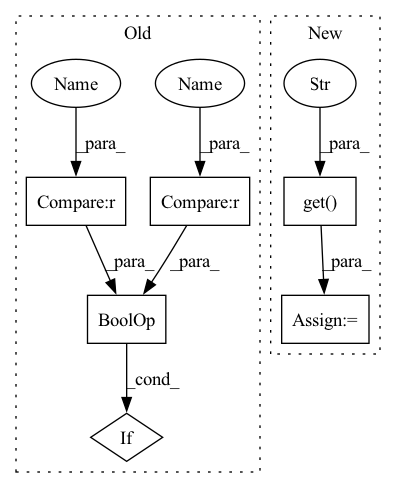

Pattern ID :2891
Before Change
def trans_normalize(pc, feat, t_normalize):
if t_normalize is None or t_normalize.get("method", None) is None :
return pc, feat
method = t_normalize["method"]After Change
def trans_normalize(pc, feat, t_normalize):
dim = t_normalize.get("recentering" , [0, 1, 2])
pc[:, dim] = pc[:, dim] - pc.mean(0)[dim]
if t_normalize.get("method", None):
method = t_normalize["method"]In pattern: SUPERPATTERN
Frequency: 3
Non-data size: 6
Instances Fragment ID: 11340509
Project Name: isl-org/open3d-ml
Commit Name: 5efb7c04c6759749412b775d0c047294eea0e246
Time: 2020-12-18
Author: 49262224+YilingQiao@users.noreply.github.com
File Name: ml3d/datasets/utils/transforms.py
M Class Name: AnonimousClass
N Class Name: AnonimousClass
M Method Name: trans_normalize(3)
N Method Name: trans_normalize(3)
M Parent Class:
N Parent Class:
M File Name: ml3d/datasets/utils/transforms.py
N File Name: ml3d/datasets/utils/transforms.py
M Start Line: 8
M End Line: 25
N Start Line: 8
N End Line: 26
Before Change
def trans_normalize(pc, feat, t_normalize):
if t_normalize is None or t_normalize.get("method", None) is None :
return pc, feat
method = t_normalize["method"]After Change
def trans_normalize(pc, feat, t_normalize):
dim = t_normalize.get("recentering" , [0, 1, 2])
pc[:, dim] = pc[:, dim] - pc.mean(0)[dim]
if t_normalize.get("method", None):
method = t_normalize["method"] Fragment ID: 11340505
Project Name: isl-org/open3d-ml
Commit Name: 5efb7c04c6759749412b775d0c047294eea0e246
Time: 2020-12-18
Author: 49262224+YilingQiao@users.noreply.github.com
File Name: ml3d/datasets/utils/transforms.py
M Class Name: AnonimousClass
N Class Name: AnonimousClass
M Method Name: trans_normalize(3)
N Method Name: trans_normalize(3)
M Parent Class:
N Parent Class:
M File Name: ml3d/datasets/utils/transforms.py
N File Name: ml3d/datasets/utils/transforms.py
M Start Line: 8
M End Line: 25
N Start Line: 8
N End Line: 26
Before Change
// actions
actions = kwargs.get("actions", [None] * (input_length + pred_length))
if self.action_conditional:
if actions is None or actions[0] == None or actions.shape[-1] != self.action_size :
raise ValueError("Given actions are None or of the wrong size!")
if type(actions) == torch.Tensor:
actions = actions.transpose(0, 1) // [T_in+pred, b, ...]After Change
// actions
b, input_length, _, _, _ = x.shape
empty_actions = torch.zeros(b, input_length + pred_length, device=self.device)
actions = kwargs.get("actions" , empty_actions)
for t in range(pred_length):
pred = self.pred_1(x, actions=actions) Fragment ID: 11340506
Project Name: ais-bonn/vp-suite
Commit Name: d2c8cad7d7c2488018a286b7ca7224fda8eb73eb
Time: 2022-01-18
Author: boltres@ais.uni-bonn.de
File Name: vp_suite/models/unet3d.py
M Class Name: UNet3D
N Class Name: UNet3D
M Method Name: forward(3)
N Method Name: forward(3)
M Parent Class: VideoPredictionModel
N Parent Class: VideoPredictionModel
M File Name: vp_suite/models/unet3d.py
N File Name: vp_suite/models/unet3d.py
M Start Line: 75
M End Line: 98
N Start Line: 78
N End Line: 90
Before Change
self.in_channels = [ChannelEnum(in_channel) for in_channel in in_channels]
self.out_channels = [ChannelEnum(out_channel) for out_channel in out_channels]
if input_normalization is None or input_normalization is False :
self.input_normalization = None
else:
self.input_normalization = input_normalizationAfter Change
self.use_mean_as_rec = model_uncertainty_config.get("use_mean_as_rec", False)
elif self.model_uncertainty_method == ModelUncertaintyMethodEnum.MONTE_CARLO_VAE:
self.num_solutions = int(model_uncertainty_config["num_solutions"]),
self.use_mean_as_rec = model_uncertainty_config.get("use_mean_as_rec" , False)
else:
raise NotImplementedError
def train(self, mode: bool = True, dropout_mode: bool = False): Fragment ID: 11340501
Project Name: mstoelzle/solving-occlusion
Commit Name: 792deaf3cb1fb399f8c60ab670ab9936e8d93537
Time: 2020-12-14
Author: maximilian@stoelzle.ch
File Name: src/learning/models/base_model.py
M Class Name: BaseModel
N Class Name: BaseModel
M Method Name: __init__(5)
N Method Name: __init__(5)
M Parent Class: ABC,nn.Module
N Parent Class: ABC,nn.Module
M File Name: src/learning/models/base_model.py
N File Name: src/learning/models/base_model.py
M Start Line: 28
M End Line: 56
N Start Line: 20
N End Line: 61